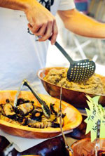

<!--
  Generated template for the HashtagPage page.

  See http://ionicframework.com/docs/components/#navigation for more info on
  Ionic pages and navigation.
-->
<ion-header>

  <ion-navbar>
    <ion-buttons left no-margin>
      <button ion-button icon-only>
      </button>
    </ion-buttons>
    <ion-title text-center>Select #Hashtag</ion-title>
  </ion-navbar>

</ion-header>


<ion-content no-padding>

  <div class="pics">

    <ion-row padding-horizontal margin-top>

      <ion-col text-center class="hash-event-pic" margin-top>
        
        <p>#music</p>
        <span>2k+events</span>
        <ion-icon name="checkmark-circle" class="checkmark"></ion-icon>
      </ion-col>

      <ion-col text-center class="hash-event-pic active" margin-top>
        
        <p>#festival</p>
        <span>800+events</span>
        <ion-icon name="checkmark-circle" class="checkmark"></ion-icon>
      </ion-col>

    </ion-row>

    <ion-row padding-horizontal>

      <ion-col text-center class="hash-event-pic active" margin-top>
        
        <p>#food</p>
        <span>15k+events</span>
        <ion-icon name="checkmark-circle" class="checkmark"></ion-icon>
      </ion-col>

      <ion-col text-center class="hash-event-pic active" margin-top>
        
        <p>#cinema</p>
        <span>3k+events</span>
        <ion-icon name="checkmark-circle" class="checkmark"></ion-icon>
      </ion-col>

    </ion-row>

    <ion-row padding-horizontal>

      <ion-col text-center class="hash-event-pic" margin-top>
        
        <p>#birthday</p>
        <span>5k+events</span>
        <ion-icon name="checkmark-circle" class="checkmark"></ion-icon>
      </ion-col>

      <ion-col text-center class="hash-event-pic" margin-top>
        
        <p>#wedding</p>
        <span>10k+events</span>
        <ion-icon name="checkmark-circle" class="checkmark"></ion-icon>
      </ion-col>
    </ion-row>

  </div>

  <div class="start">
    <button ion-button round block>Let's Start</button>
  </div>


</ion-content>
